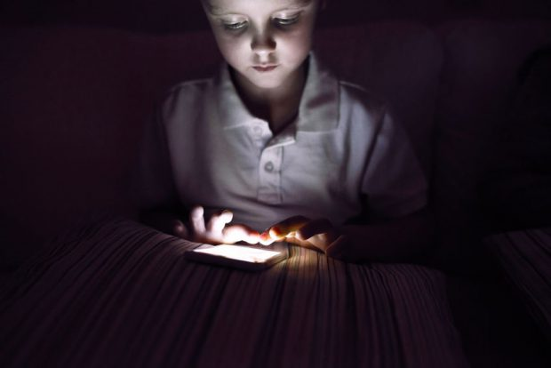

Aproape că nimănui nu îi mai este străin termenul de jocuri online. Pe scurt, acum, jocurile funcționează prin intermediul internetului și se joacă într-o rețea formată din mai mulți jucători. Însă, jocurile nu au apărut de puțin timp. S-au putut juca din totdeauna, în ciuda tehnologiei avansate de acum. Bineînțeles, înainte de internet aveam acces la jocuri prin modem-uri sau terminale fără fir. Începând cu anul 1990, jocurile online au devenit tot mai vizibile, iar începând de aici s-au creat noi forme de joc.
O informație utilă care ne-ar putea ajuta să conștientizăm puterea jocurilor online este faptul că în anul 2006, vânzările pentru jocuri ajungeau la o valoare de peste 300 de milioane de dolari pe an, iar peste aproximativ un an, în 2007, vânzările jocurilor online erau evaluate la mai mult de un miliard de dolari pe an.
În prezent, există tot mai multe site-uri românești care pun la dispoziție în mod facil accesul la o gamă variată de jocuri online. De aici și ușurința cu care mulți copii ajung să acceseze jocurile, de multe ori fără să știe ce fac cu adevărat.
Dacă în primii ani de viață, cei mici modelează diverse figurine în joacă, începând de la vârsta de trei ani, copiii încep să își inventeze propriile scenarii și reguli de joc în minte. De acum înainte, majoritatea copiilor încep să interacționeze cu situații reale din viață, pe care ulterior le transferă în joc. Acum este vârsta optimă la care orice copil se dezvoltă, își face prieteni și trece printr-o reală transformare
Cu siguranță orice părinte își pune întrebarea, sunt bune jocurile online pentru copilul meu? Ei bine, având în vedere era digitală în care ne aflăm cu toții, dar și timpul pe care toți copiii îl petrec în fața calculatorului, jocurile online sunt bune dacă analizăm câteva aspecte.
Jocurile din fața calculatorului îi pot dezvolta copilului gândirea matematică, având în vedere
situațiile în care este pus în fața unui joc, îi pot dezvolta limbajul, creativitatea, imaginația dar și
cititul. Pentru că se află în plin joc, copilul își dorește să învețe cât mai repede regulile jocului
pentru a ajunge la victorie.
Distracția de pe internet poate fi rapidă și lipsită de efort. Multe jocuri sunt simple și nu necesită un grad major de concentrare, însă pe termen lung, jocurile pot avea următoarele efecte negative:
-> Jocurile online descurajează în mod direct pasiunea pentru lectură
Copiii vor renunța să mai depună efort pentru a transpune cuvintele în imagini din cărțile de lectură pe care ar trebui să le citească. Jocurile pe calculator pot limita această etapa, iar copiii să nu o mai considere atât de importantă pentru dezvoltarea optimă a comportamentului lor.
-> Jocurile pe calculator îi pot face pe copii să se izoleze
Recomandarea tuturor specialiștilor în educația copiilor este ca, încă de la vârste fragede, copilul să interacționeze cu alți copii de vârsta lui și nu numai. Ei bine, timpul petrecut în fața calculatorului poate limita cooperarea cu alți copii, o acțiune nefavorabilă pe termen lung pentru copil.
->Copiii pot acumula tensiune musculară in timpul jocurilor pe calculator
În timpul jocurilor pe calculator, copiii acumulează o serie de tensiuni pe care nu le exprimă, iar acest lucru poate duce la reacții agresive atunci când vor crește mari. Corpul acumulează o serie de energii negative din cauza emoțiilor care se pot transforma în frustrări și ulterior, în daune incontestabile.
->Jocurile online pot crea dependență
Dacă timpul petrecut în fața calculatorului este din ce în ce mai mare în fiecare zi, atunci acest fapt ar putea duce către dependența copilului asupra jocurilor video. Mai mult de atât, dacă observi un comportament agresiv al copilului, în afara jocurilor de pe calculator, atunci acesta ar putea fi primul semnal de alarmă. Timpul petrecut la calculator trebuie restricționat, în special la jocurile cu conținut violent.
Dar dacă se controlează timpul stat in fața calculatorului și se stabilește o normă, totul este ok. Chiar recomand jocurile video de orice tip, dar in special jocurile de strategie de tip puzzle sau dependente de reflexe de tip MOBA sau RPG. Jocurile Online aduc foarte multe beneficii, deci distracție plăcută la jocuri!